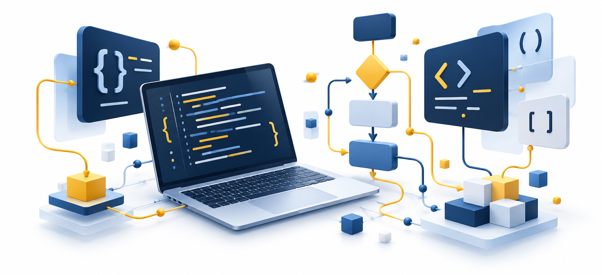

Мови і парадигми програмування
Інструменти, парадигми та розвиток мов. Поглиблення: компілятор, інтерпретатор, асемблер.
Квест · поглиблення · практикаВідкрити тему →Розумійте принципи, порівнюйте рішення й створюйте власні програми. Короткі пояснення, інтерактивні квести та практика на реальних задачах.

Інструменти, парадигми та розвиток мов. Поглиблення: компілятор, інтерпретатор, асемблер.
Квест · поглиблення · практикаВідкрити тему →Спроєктуйте програму до першого рядка коду й простежте її шлях до виконання.
Квест · поглиблення · практикаВідкрити тему →Створіть зрозумілий інтерфейс і перевірте, як програма реагує на реальні дані.
Квест · поглиблення · практикаВідкрити тему →Порівняйте типізацію, перетворення та арифметику в трьох мовах.
Квест · поглиблення · практикаВідкрити тему →Використайте умови, щоб правильно обробляти межі, помилки й вимоги.
Квест · поглиблення · практикаВідкрити тему →Дослідіть межі циклів, їхній стан і умови завершення.
Квест · поглиблення · практикаВідкрити тему →Побудуйте функції з чіткими контрактами та простежте передачу даних.
Квест · поглиблення · практикаВідкрити тему →Навчіться відрізняти байти, кодові точки й видимі символи.
Квест · поглиблення · практикаВідкрити тему →Доберіть контейнер за операціями, які справді потрібні вашій програмі.
Квест · поглиблення · практикаВідкрити тему →Порівняйте стратегії пошуку й оцініть масштабованість без міфів про Big O.
Квест · поглиблення · практикаВідкрити тему →Перетворіть проблему на малий продукт із перевірними вимогами та прототипом бота.
Квест · поглиблення · практикаВідкрити тему →Розподіліть відповідальність у команді й пройдіть безпечний цикл роботи з Git.
Квест · поглиблення · практикаВідкрити тему →Python та JavaScript запускаються в браузері. C++ — через Programiz. Для Python потрібен інтернет. Ваш код і результати зберігаються лише в цьому браузері; звіти можна завантажити.